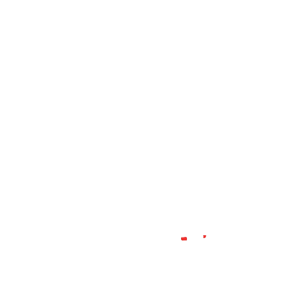
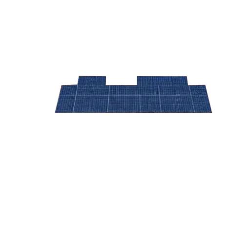
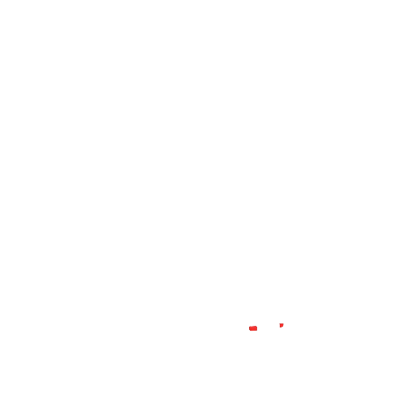
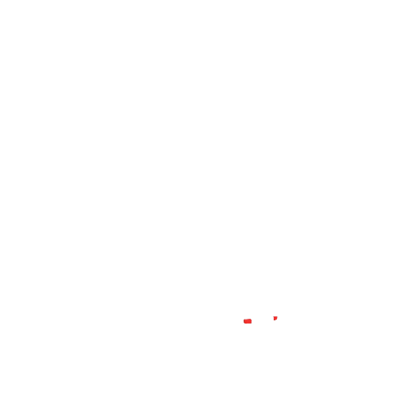
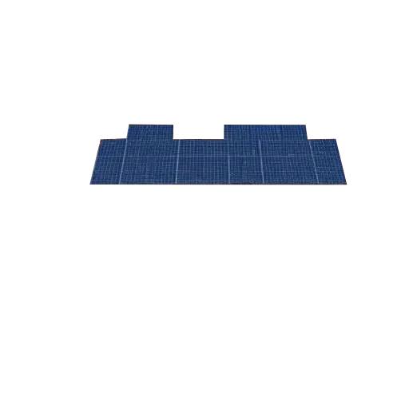
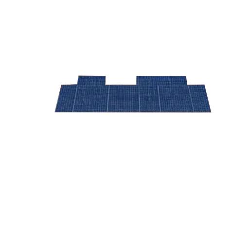

(Do it Yourself) "Hazlo tú mismo, ilumina tu hogar."
Bienvenido a DIY Solar Home
Descubre cómo puedes instalar tu propio sistema de energía solar en casa. Aprende sobre los materiales necesarios, el proceso de instalación y cómo mantener tu sistema funcionando de manera eficiente.
¿Qué se necesita para instalar paneles solares?
Para llevar a cabo una instalación de paneles solares de forma exitosa, es fundamental realizar una evaluación detallada del sitio donde se llevará a cabo el proyecto. Esta evaluación consiste en analizar la cantidad de luz solar que recibe el área a lo largo del año, así como la inclinación y orientación más adecuada para maximizar la captación de energía solar.
Materiales necesarios
También se necesita seleccionar paneles solares adecuados, ya que existen diferentes tipos y marcas en el mercado, por lo que es fundamental elegir aquellos que mejor se adapten a las necesidades del proyecto y que ofrezcan una buena relación entre el costo y la eficiencia. Además, se deben instalar estructuras de soporte adecuadas que mantengan los paneles seguros y correctamente posicionados. Estas estructuras pueden variar según el tipo de techo o terreno donde se instalen los paneles solares.
Para la instalación de un sistema solar fotovoltaico, necesitarás los siguientes materiales:
Paneles solares
Inversor solar
Baterías (opcional)
Estructura de soporte
Cableado y conectores
Herramientas de instalación
Instalación
Este es un ejemplo de instalación durante 24 horas, podemos ver como funciona las placas fotovoltaicas:


Dependiendo de la normativa local, puede ser necesario obtener permisos para la instalación. En algunos lugares, existen incentivos gubernamentales o subvenciones para energías renovables.
Evaluación del sitio: Analizar la ubicación y la cantidad de luz solar disponible.
Selección de paneles solares: Elegir los paneles adecuados según las necesidades energéticas.
Instalación de estructuras de soporte: Asegurar los paneles en el tejado o superficie.
Conexión eléctrica: Conectar los paneles al inversor y a la red eléctrica.
Configuración de baterías: Si se utilizan, conectar y configurar las baterías.
Pruebas y puesta en marcha: Verificar el funcionamiento del sistema.
Recuerda que la instalación de un sistema solar puede ser compleja y es recomendable contar con la ayuda de profesionales si no tienes experiencia en electricidad o instalaciones solares.
Mantenimiento
El mantenimiento de un sistema solar fotovoltaico es esencial para garantizar su eficiencia y prolongar su vida útil. Aquí hay algunos consejos para el mantenimiento:
Inspección regular:
Revisa los paneles solares periódicamente para detectar suciedad, escombros o daños. Limpia los paneles si es necesario, especialmente en áreas con polvo o contaminación.
Verificación de conexiones:
Asegúrate de que todas las conexiones eléctricas estén seguras y sin corrosión. Revisa los cables y conectores para detectar signos de desgaste.
Monitoreo del rendimiento:
Utiliza un sistema de monitoreo para verificar el rendimiento de tu sistema solar. Si notas una disminución en la producción de energía, investiga la causa.
Revisión del inversor:
Asegúrate de que el inversor esté funcionando correctamente. Algunos inversores tienen luces de advertencia que indican problemas.
Reemplazo de baterías:
Si tu sistema tiene baterías, verifica su estado y reemplázalas según las recomendaciones del fabricante.
Consulta a un profesional:
Si no estás seguro de cómo realizar el mantenimiento o si encuentras problemas, es recomendable consultar a un técnico especializado en energía solar.
Contacto
Si tienes preguntas o necesitas más información sobre la instalación de paneles solares, no dudes en ponerte en contacto con nosotros. Estamos aquí para ayudarte a hacer la transición hacia una energía más sostenible.
Email:
Teléfono: 123-456-7890
Dirección: Calle Energía Solar, Ciudad Verde
Horario de atención: Lunes a Viernes, 9:00 AM - 5:00 PM
Redes sociales: Síguenos en nuestras redes sociales para obtener más información y actualizaciones sobre energía solar.
¡Gracias por visitar nuestro sitio web! Esperamos poder ayudarte en tu camino hacia la energía solar.
FAQ
Si tienes preguntas sobre la instalación de paneles solares, aquí tienes algunas respuestas a preguntas frecuentes:
¿Cuánto cuesta instalar paneles solares?
El costo de la instalación de paneles solares varía según el tamaño del sistema, la ubicación y los materiales utilizados. En promedio, el costo puede oscilar entre $10,000 y $30,000.
¿Cuánto tiempo tardará en pagarse el sistema solar?
El tiempo de retorno de la inversión (ROI) depende del costo del sistema, los ahorros en la factura de electricidad y los incentivos fiscales. En general, puede tardar entre 5 y 10 años en pagarse.
¿Los paneles solares funcionan en días nublados?
Sí, los paneles solares pueden generar energía incluso en días nublados, aunque su eficiencia puede disminuir. La luz difusa aún puede ser captada por los paneles.
¿Necesito baterías para un sistema solar?
No necesariamente. Las baterías son opcionales y se utilizan para almacenar energía para su uso durante la noche o en días nublados. Si no tienes baterías, el sistema estará conectado a la red eléctrica.
¿Puedo instalar paneles solares yo mismo?
Es posible instalar paneles solares tú mismo, pero se recomienda contar con la ayuda de profesionales para garantizar una instalación segura y eficiente. Además, algunas garantías pueden requerir una instalación profesional.
¿Cuánto tiempo duran los paneles solares?
La mayoría de los paneles solares tienen una vida útil de 25 a 30 años. Sin embargo, su eficiencia puede disminuir con el tiempo.
¿Qué sucede si hay una falla en el sistema solar?
Si hay una falla en el sistema solar, es importante contactar a un técnico especializado para diagnosticar y reparar el problema. Algunos inversores tienen luces de advertencia que indican fallas.
¿Los paneles solares requieren mantenimiento?
Sí, los paneles solares requieren un mantenimiento mínimo, como la limpieza periódica y la inspección de conexiones. Es recomendable realizar un mantenimiento regular para garantizar su eficiencia.
¿Puedo vender el exceso de energía generada?
En muchos lugares, puedes vender el exceso de energía generada a la red eléctrica a través de un programa de medición neta. Esto te permite recibir créditos en tu factura de electricidad.


 

 
